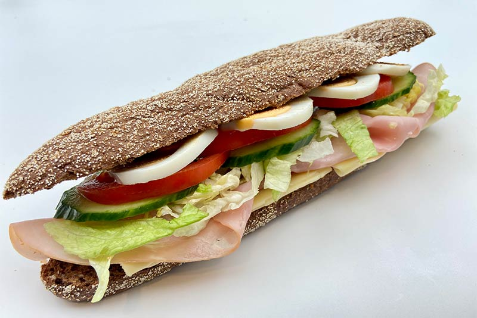
Beetje gezond Pistolet
Kaas en/of ham/kipfilet, ijsbergsla, komkommer, tomaat, gekookt ei en honingmosterdsaus.
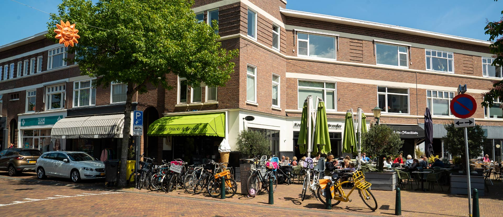
Fahrenheitstraat 601, Den Haag
Ambachtelijke snacks, vers belegde broodjes en het terras onder de groene luifel. Sinds 1986 in de Fahrenheitstraat, een Haagse naam sinds 1956.
Sinds 15 november 1986 is Koemans gevestigd in de Fahrenheitstraat. We zijn blij al jaren een onderdeel te zijn van dit gezellige winkelcentrum. Wij proberen ons te onderscheiden met onze ambachtelijke producten.
Eet smakelijk en tot ziens!
Kelly Bouman en Clint Soer
eigenaren Koemans Snacks en Broodjes
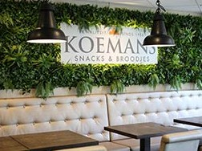
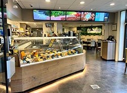
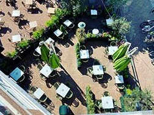
Luxe pistolets, naar keuze wit of bruin. Elk € 9,50.

Kaas en/of ham/kipfilet, ijsbergsla, komkommer, tomaat, gekookt ei en honingmosterdsaus.
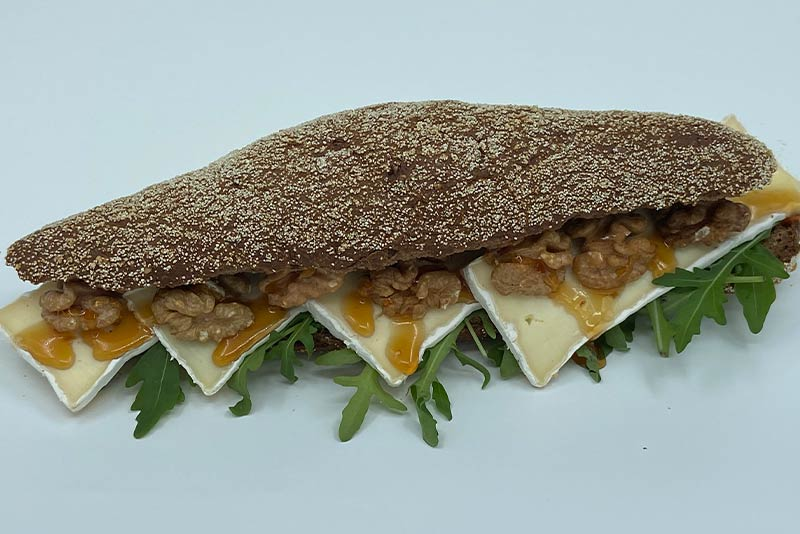
Brie, walnoten, honing en rucola.
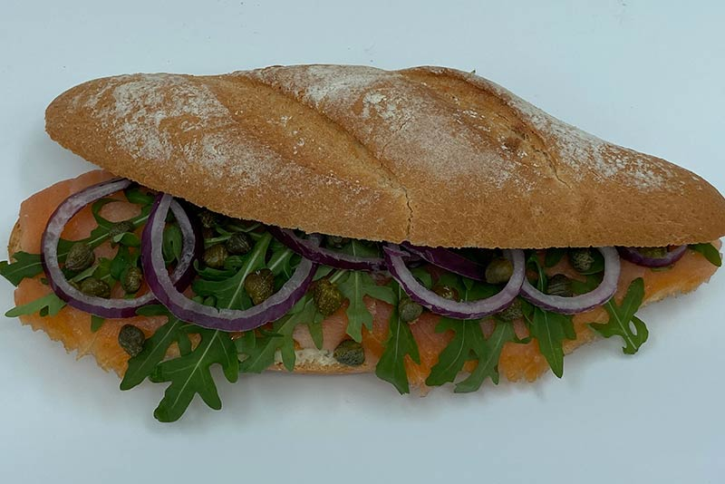
Kruidenkaas, gerookte zalm, rucola, rode ui en kappertjes.
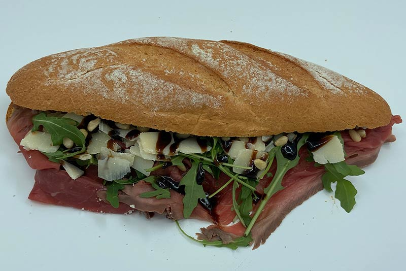
Rosbief, rucola, Parmezaanse kaas, pijnboompitten en balsamico siroop.
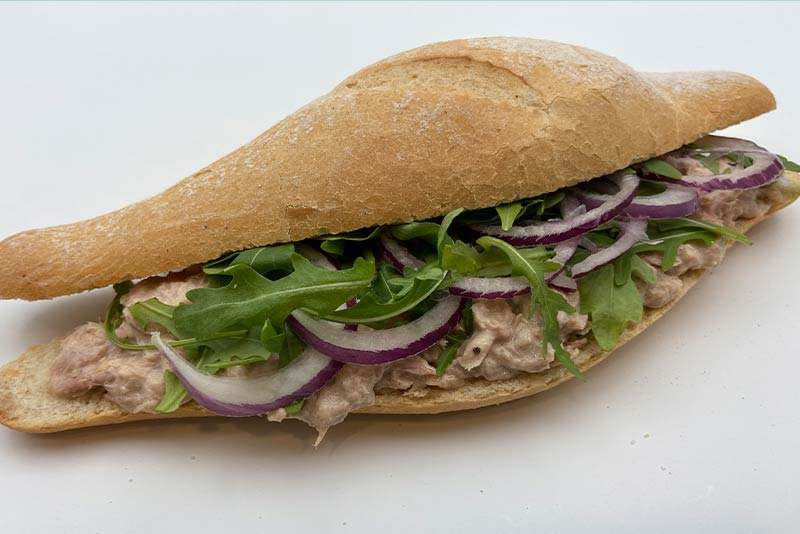
Tonijnsalade, rucola, rode ui en kappertjes.
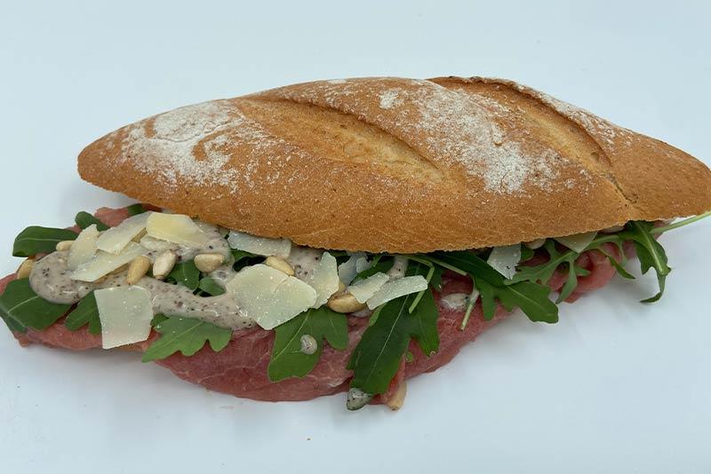
Rundercarpaccio, rucola, truffelmayonaise en pijnboompitten.
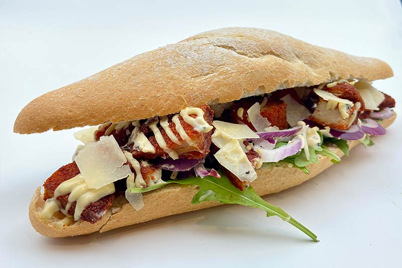
Kipschnitzel, rucola, rode ui, Parmezaanse kaas en chickensandwichsaus (zoete, romige saus).
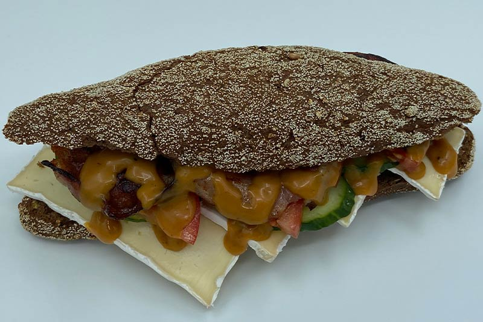
Brie, gebakken ontbijtspek, komkommer, tomaat en beenhamsaus (licht zoete saus).
Ook op de kaart: Gouden Milder en Shark Attack (€ 9,50), en tot 17.00 uur de club sandwich zalm of kip (€ 12,50).
De keuze is reuze. Van de Smash Burger, enkel, dubbel of tripple, tot de Bacon Boss, de Crispy Chicken Burger en de Kroketburger.
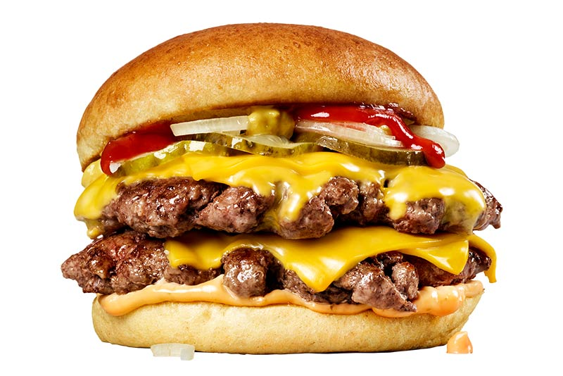
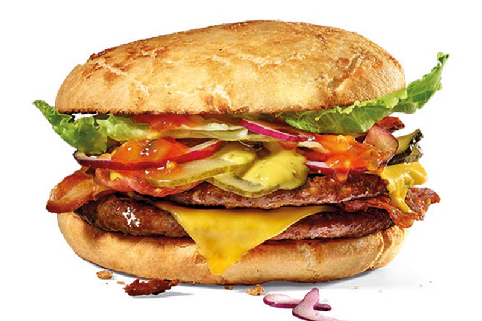
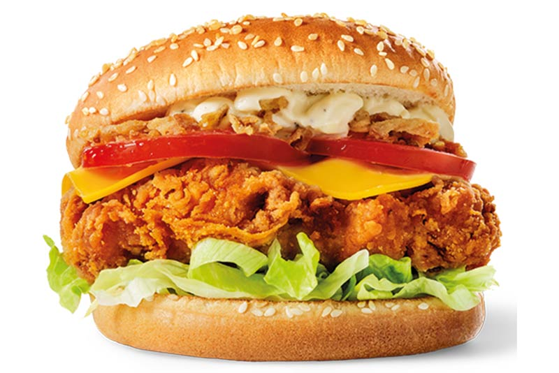
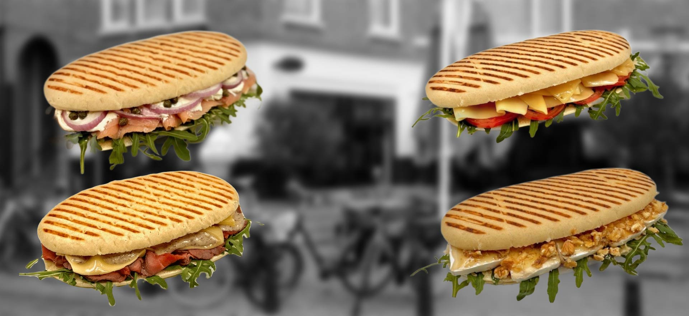
Panini'sNieuw, klaargemaakt op de grill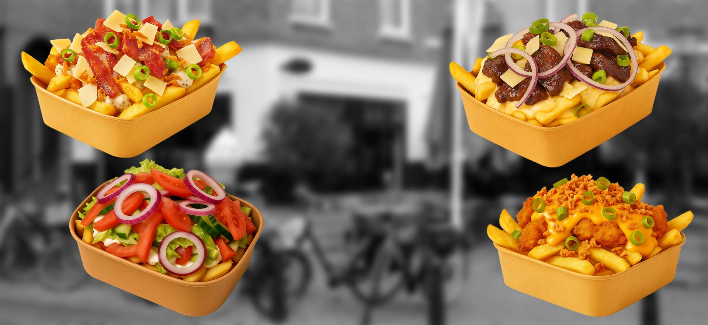
Loaded friesPatat met diverse toppings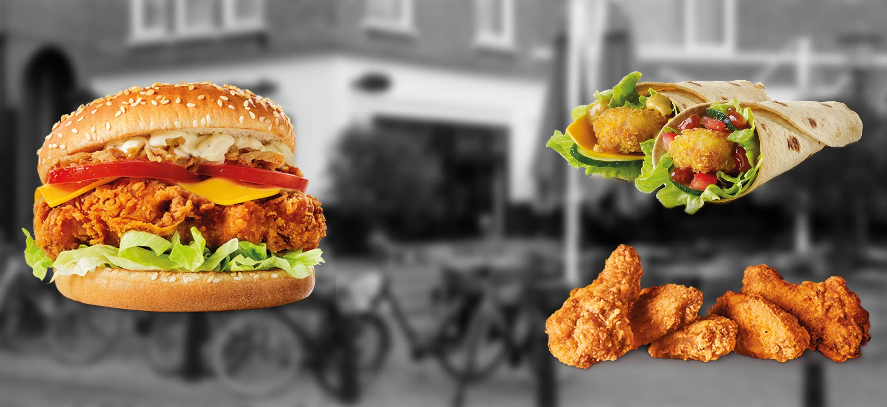
Chicken favoritesHotwings, chickenwraps en burgers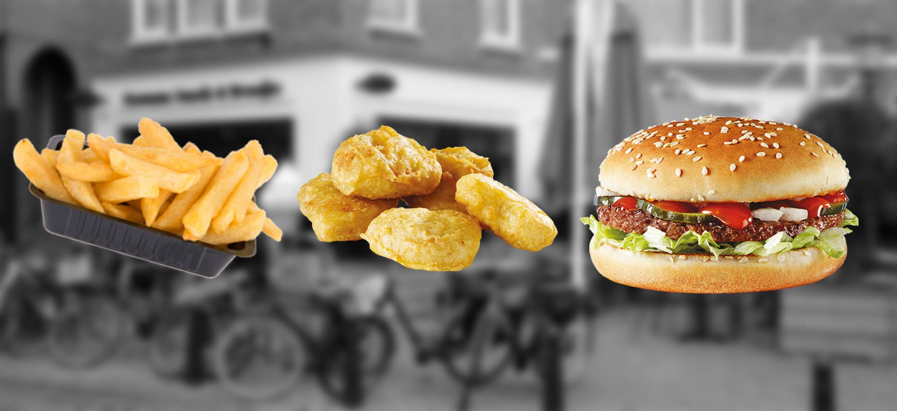
Vega en glutenvrijPatat, diverse snacks en burgers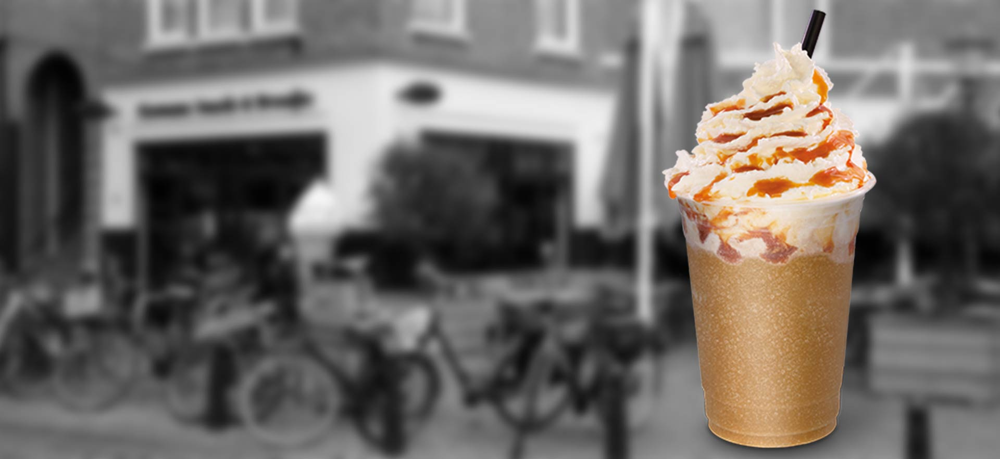
Frozen FrappuccinoIJskoffie met caramelsaus en slagroomVan banketbakkerij tot Cafetaria van het jaar.
Op 6 juni 1956 opent de eerste Koemans-vestiging. "Mijn ouders zijn in 1956 vanuit Amsterdam naar Den Haag gekomen om hier een banketbakkerij te starten. Al vrij snel breidden ze hun assortiment uit met snacks, die ze zelf op ambachtelijke wijze produceerden," vertelt Nico Koemans.
Zo'n twintig jaar later, begin jaren tachtig, sluit de banketbakkerij en stapt de familie volledig over naar een lunchroom.
Nico opent een Koemans-vestiging in de Fahrenheitstraat. "Toentertijd mocht ik van dit pand alleen de biljartruimte huren en het accent lag op het afhalen van snacks. Ik startte met twee parttime medewerkers, maar ik was ook de afwasser, de schoonmaker, we maakten veel producten zelf en ik hielp de klanten. Eigenlijk was ik het manusje-van-alles. Het was een geweldig leuke tijd."
In de loop der jaren groeit de zaak in oppervlakte en aanbod, langzaam door naar 17 medewerkers.
Na twee keer tweede te zijn geweest, wint Koemans de prijs 'Cafetaria van het jaar 2001' en mag zich de beste van Nederland noemen.
Na 32 jaar inzet met ziel en zaligheid draagt Nico de zaak over. Sinds 1 januari 2019 zijn Kelly Bouman en Clint Soer de eigenaren. Kelly begon er als 17-jarige in de bediening en kreeg na enkele jaren een leidinggevende functie. Voor Clint was het nieuw, maar inmiddels hebben ze een goede taakverdeling gevonden.
"De zaak staat als een huis! Het is aan ons om die bekende kwaliteit voort te zetten, en ondertussen nog meer mensen te bereiken. Ons streven? Binnen 5 jaar tot de top 10 van beste cafetaria's in Nederland behoren!"
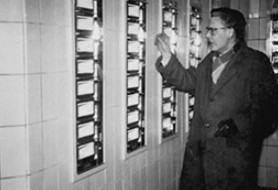
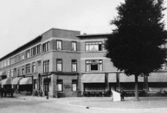
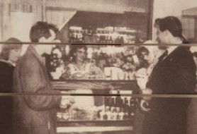
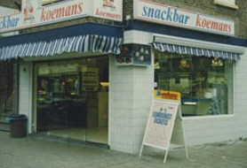
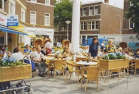
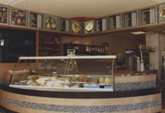
Nico: "Ik wil alle gasten bedanken voor hun vertrouwen en het bezoek van de zaak de afgelopen jaren!" Meer weten over de historie? Bekijk de video over Koemans op YouTube.
Inmiddels hebben wij meer dan 1000 Google-reviews mogen ontvangen.
Niet alleen het lekkerste bakkie koffie in Den Haag maar de klant is hier altijd koning en de verse belegde broodjes zijn heerlijk!
M. v. B.
Koemans is de snackbar MET: met die extra vriendelijkheid en behulpzaamheid, met die extra aandacht voor de producten en de gezelligheid in de zaak.
D. C.
Alles tip top in orde! Winkel schoon, goed eten, super vriendelijk personeel! Goede plek om je lunch op te halen!
J. v. d. M.
Voor de lekkerste snacks moet je hier zijn. Heerlijke frites, kroketten van o.a. Holtkamp, enz., enz.
F. v. E.
Altijd even een tussenstop maken voor een latte. Prima kwaliteit en personeel.
M.
Echt een top restaurant met eindelijk goeie pindasaus. Ook fijne bediening.
K. T.
Iets te vieren of wil je gewoon iemand verwennen? Dan is de Koemans cadeaubon het perfecte cadeau. De cadeaubon is verkrijgbaar in onze winkel, in de waarde van uw keuze. Welk familielid, welke vriend, vriendin of collega ga jij verrassen?
Meer informatie? Vraag ernaar in onze winkel of stuur een e-mail naar info@koemanssnacks.nl.
070 363 9182
info@koemanssnacks.nl
| Maandag | 11.00 tot 20.30 uur |
|---|---|
| Dinsdag | 11.00 tot 20.30 uur |
| Woensdag | 11.00 tot 20.30 uur |
| Donderdag | 11.00 tot 20.30 uur |
| Vrijdag | 11.00 tot 21.30 uur |
| Zaterdag | 11.00 tot 21.30 uur |
| Zondag | 12.00 tot 20.30 uur |
Online bestellen voor afhalen? De actuele afhaaltijden ziet u op de bestelpagina.